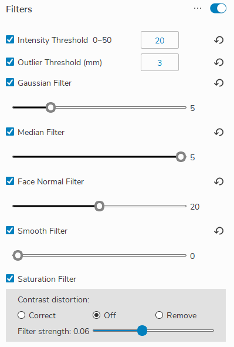

2. 滤波器设置
本节介绍用于预处理和后处理图像的过滤器，以优化点云质量。
{kind=link}
2.1. Intensity Threshold/强度阈值
小技巧
我们的强度指标是基于捕捉到的四个边缘投影的平均像素强度值。
阈值有助于过滤掉由图像中黑暗区域的低质量像素引起的异常值。一般来说，我们看到，对于反射率低的物体，算法无法进行三维重建，因此在那里计算出错误的点。
强度阈值对应于我们想要过滤的RGB平均值。
例如，当强度阈值为20时，最终图像中所有数值小于20的像素将被过滤掉。
2.2. Outlier Threshold/离群阈值
用来过滤掉与最近的点云超过一定距离的点云。
小技巧
如果设置为3毫米，则确定两个相邻点云之间的直线距离是否大于3毫米。如果大于3毫米，则过滤掉离群点。
由于点云的高分辨率，预期的点云密度非常高，所以如果一个点云和任何其他点云之间的距离超过设定的距离，就会删除该点云。
单个离群点云被过滤掉。但是，如果有多个离群点相互靠近，这个过滤器就不适用。
2.3. Gaussian Filter/高斯滤波器
这个滤波器将一个移动平均窗口应用于所拍摄图像的每个像素。高斯核的大小可以设置为3x3、5x5、7x7、9x9、11x11和13x13。
小技巧
这个过滤器有助于去除点云中的异常值
2.4. Median Filter/中值滤波器
这个滤波器找到一个滑动窗口的中值来更新当前的像素为。核心的大小可以是3x3或5x5。
小技巧
这个过滤器有助于去除点云中的异常值
2.5. Face Normal Filter/法向量滤波器
这个滤波器分析点云多边形网格，找到任何多边形的表面法向量。如果表面法线向量相对于视线的角度大于表面法线值，那么这些点就被过滤掉了。
小技巧
在有尖角和大面积的表面法线垂直于视线的物体上，会出现许多离群点。一个例子是一个盒子：由于噪声、低对比度或过度饱和的图像，墙壁有时会在点云中产生离群点。
如果没有这个过滤器，不正确的点就会出现在洞的边缘、尖锐的落差、垂直面等等。
2.6. Smooth Filter/平滑滤波器
平滑滤波器是一个后处理滤波器，它将有组织的点云的深度值四舍五入到最近的毫米
小技巧
例如，如果平滑值为0.5，每个深度值将被四舍五入到最近的0.5毫米。
这个过滤器在有噪声误差的图像导致点云上的小振荡的情况下很有用。如果你知道模型是平坦的，而你在点云上看到小的振荡，你可以使用这个过滤器将数据四舍五入，以创建一个平坦的模型。
2.7. Saturation Filter/饱和滤波器
小技巧
如果使用这个过滤器，曝光过度的区域会被过滤掉。
当RGB三个通道中的一个超过255时，就会删除该像素，通常G（绿色）是第一个曝光过度的通道。
在使用该滤镜时，会自动选择HDR模式，如果没有必要，可以手动取消。
该滤镜的一个缺点是，一些光滑的边缘可能会被扭曲
2.8. Contrast Distortion Filter/对比度失真过滤器
对比度失真是由于镜头的不完美和光学现象，如衍射和色差而产生的。它出现在从高吸收性表面到反射性表面的突然对比变化中（例如在棋盘上从黑到白的过渡），这导致了三维点云的测量误差。
小技巧
如果选择 “移除”，高对比度失真区域将从3D点云中移除。
如果选择 “纠正”，由对比度失真引起的测量误差将根据用户在GUI上设置的 “强度 “值进行补偿。用户使用的 “强度 “值越高，补偿的测量误差就越大。注意，有可能过度补偿测量误差，看起来像 “相反的 “对比度失真。